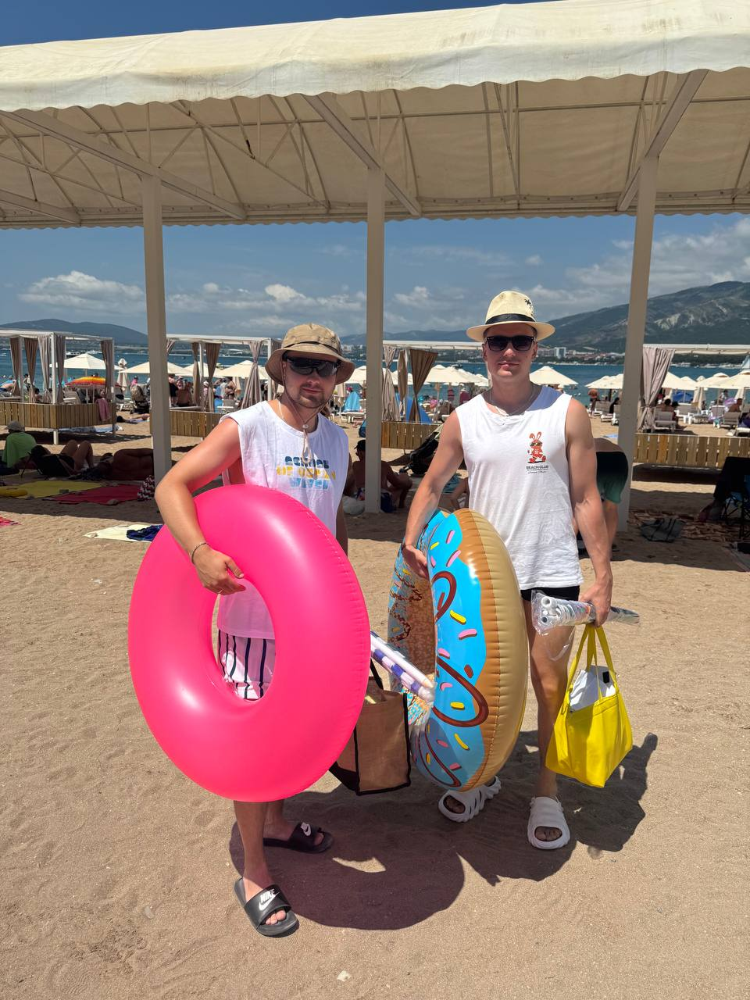

😎
Уровень харизмы
Опасно высокий. В обычной жизни рекомендуется применять дозированно, но сегодня ограничений нет.
Сегодня официально разрешается быть ещё харизматичнее, мудрее и чуть менее серьёзным, чем вчера. Все спорные решения автоматически считаются «именинник так решил».
За Славика — чтобы здоровье было крепким, настроение лёгким, деньги приходили быстрее расходов, а рядом всегда были люди, с которыми можно смеяться до боли в животе.
Опасно высокий. В обычной жизни рекомендуется применять дозированно, но сегодня ограничений нет.
Лучший. Обжалованию не подлежит. Решение вступило в силу давно и действует бессрочно.
Накоплен серьёзный. Используется выборочно — преимущественно после фразы «я же говорил».

За стабильно высокий уровень дружбы, юмора и способности делать обычный вечер заметно лучше.
Редкое сочетание здравого смысла и готовности поддержать то, что здравым смыслом уже не объясняется.
Победа присуждена единогласно. Конкуренты решили даже не заявляться.